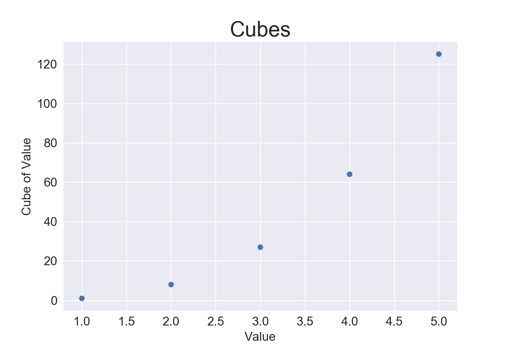
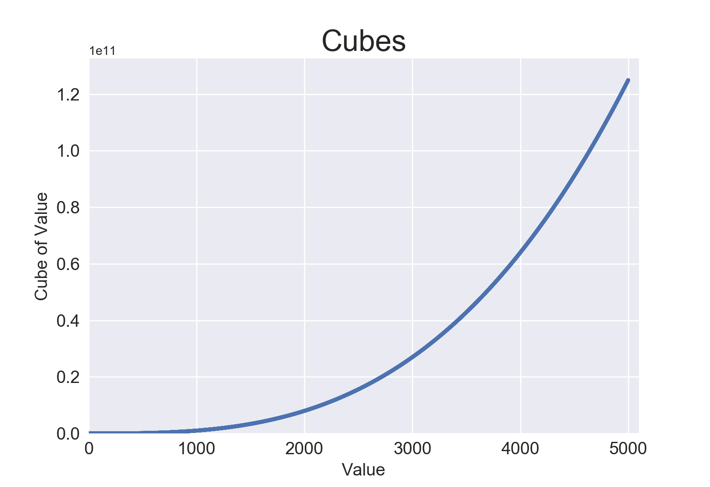
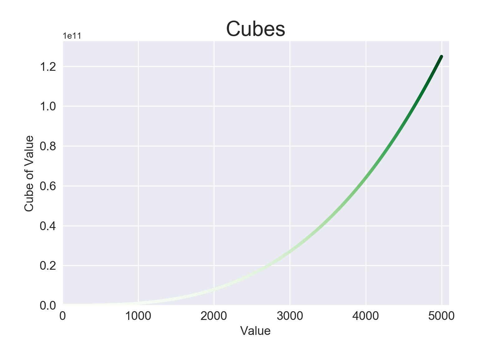
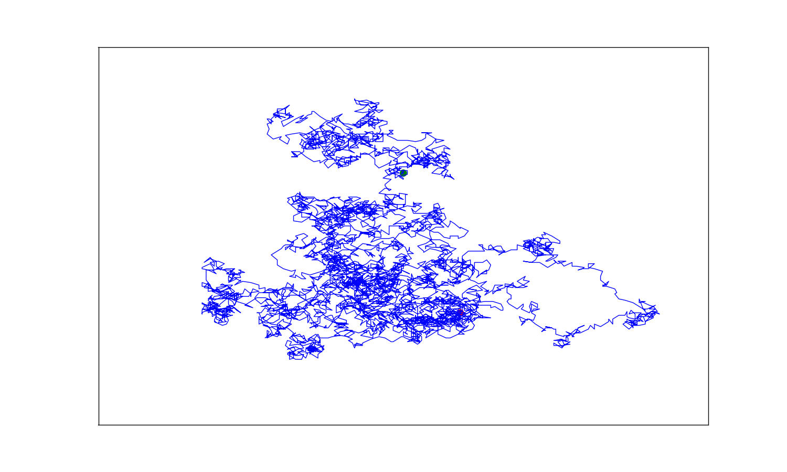
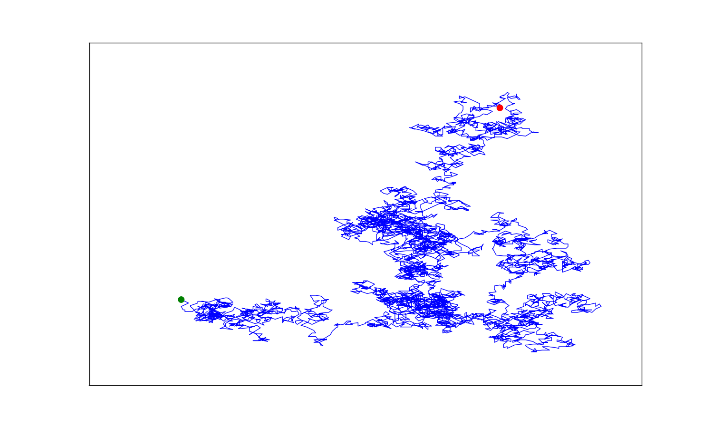
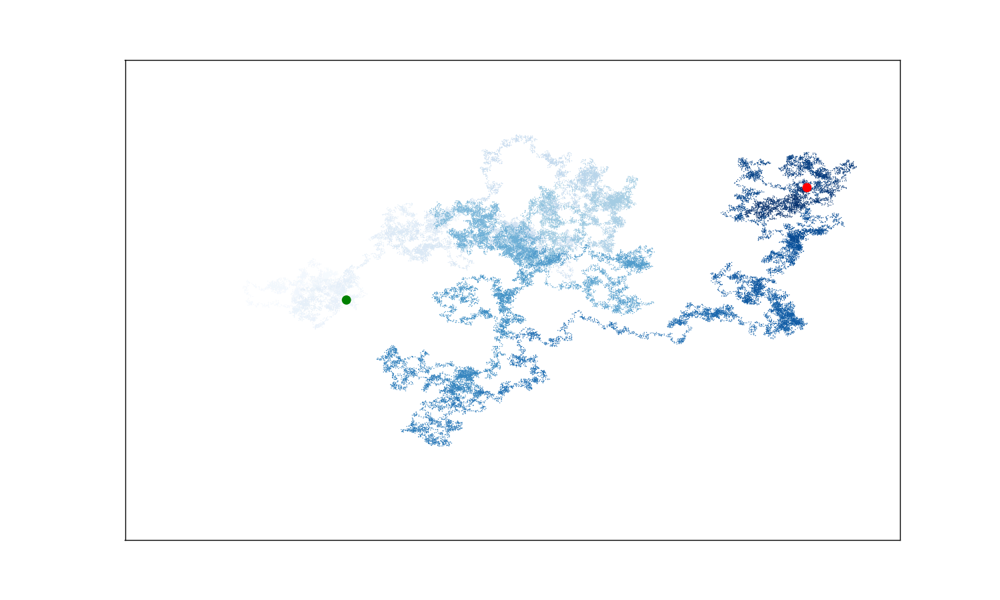
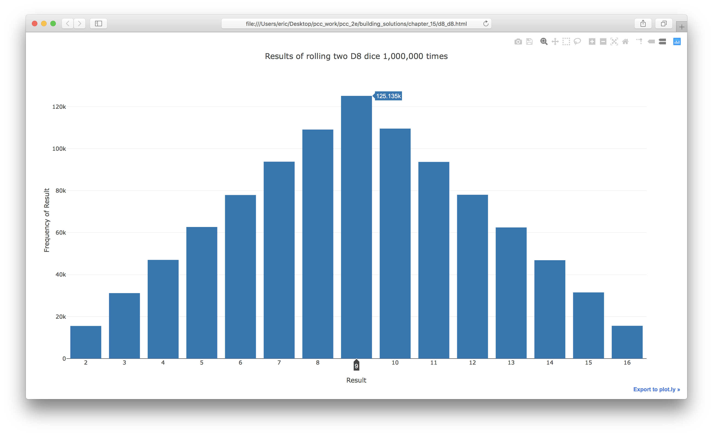
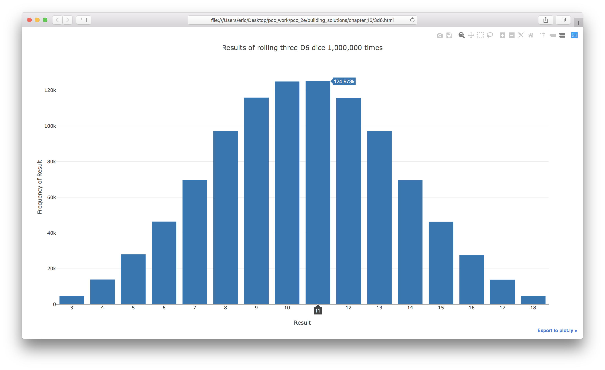
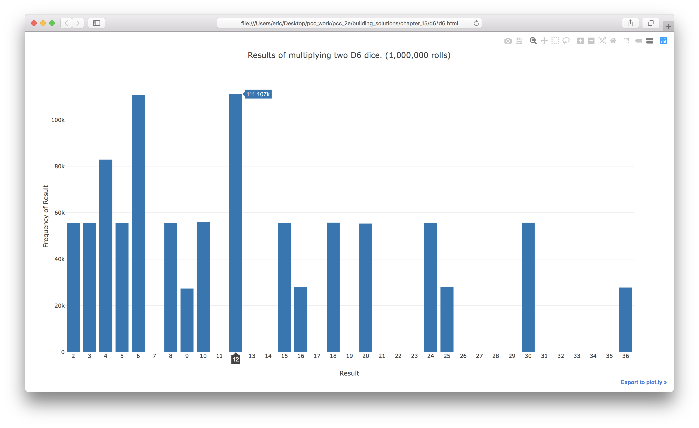
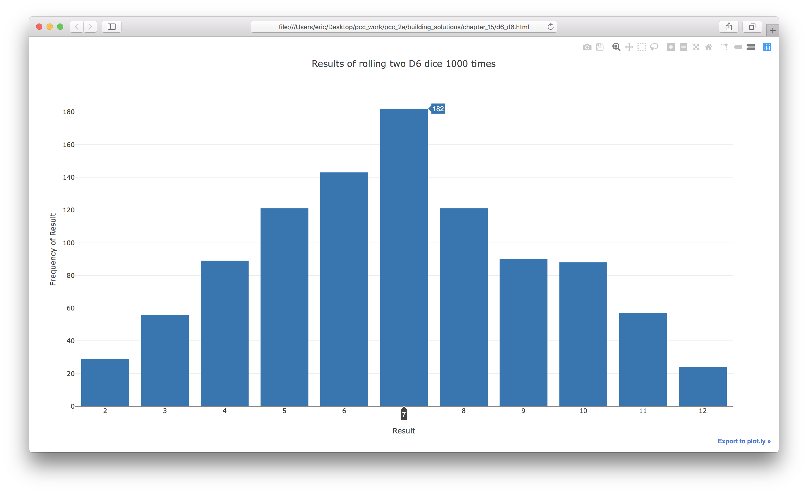

Solutions - Chapter 15
- 15-1: Cubes
- 15-2: Colored Cubes
- 15-3: Molecular Motion
- 15-5: Refactoring
- 15-6: Two D8s
- 15-7: Three Dice
- 15-8: Multiplication
- 15-9: Die Comprehension
Back to solutions.
15-1: Cubes
A number raised to the third power is a cube. Plot the first five cubic numbers, and then plot the first 5000 cubic numbers.
Plotting 5 cubes:
from matplotlib import pyplot as plt
# Define data.
x_values = [1, 2, 3, 4, 5]
cubes = [1, 8, 27, 64, 125]
# Make plot.
plt.style.use('seaborn')
fig, ax = plt.subplots()
ax.scatter(x_values, cubes, edgecolor='none', s=40)
# Set chart title and label axes.
ax.set_title("Cubes", fontsize=24)
ax.set_xlabel('Value', fontsize=14)
ax.set_ylabel('Cube of Value', fontsize=14)
# Set size of tick labels.
ax.tick_params(axis='both', labelsize=14)
# Show plot.
plt.show()
Output:

Plotting 5000 cubes:
from matplotlib import pyplot as plt
# Define data.
x_values = list(range(5001))
cubes = [x**3 for x in x_values]
# Make plot.
plt.style.use('seaborn')
fig, ax = plt.subplots()
ax.scatter(x_values, cubes, s=10)
# Set chart title and label axes.
ax.set_title("Cubes", fontsize=24)
ax.set_xlabel('Value', fontsize=14)
ax.set_ylabel('Cube of Value', fontsize=14)
# Set size of tick labels, and set range for each axis.
ax.tick_params(axis='both', labelsize=14)
ax.axis([0, 5100, 0, 5100**3])
# Show plot.
plt.show()
Output:

15-2: Colored Cubes
Apply a colormap to your cubes plot.
from matplotlib import pyplot as plt
# Define data.
x_values = list(range(5001))
cubes = [x**3 for x in x_values]
# Make plot.
plt.style.use('seaborn')
fig, ax = plt.subplots()
ax.scatter(x_values, cubes, c=cubes, cmap=plt.cm.Greens, s=10)
# Set chart title and label axes.
ax.set_title("Cubes", fontsize=24)
ax.set_xlabel('Value', fontsize=14)
ax.set_ylabel('Cube of Value', fontsize=14)
# Set size of tick labels, and set range for each axis.
ax.tick_params(axis='both', labelsize=14)
ax.axis([0, 5100, 0, 5100**3])
# Show plot.
plt.show()
Output:

15-3: Molecular Motion
Modify rw_visual.py by replacing ax.scatter() with ax.plot(). to simulate the path of a pollen grain on the surface of a drop of water, pass in the rw.x_values and rw.y_values, and include a linewidth argument. Use 5000 instead of 50,000 points.
import matplotlib.pyplot as plt
from random_walk import RandomWalk
# Keep making new walks, as long as the program is active.
while True:
# Make a random walk.
rw = RandomWalk(5_000)
rw.fill_walk()
# Plot the points in the walk.
plt.style.use('classic')
fig, ax = plt.subplots(figsize=(15, 9))
point_numbers = range(rw.num_points)
ax.plot(rw.x_values, rw.y_values, linewidth=1)
# Emphasize the first and last points.
ax.scatter(0, 0, c='green', edgecolors='none', s=100)
ax.scatter(rw.x_values[-1], rw.y_values[-1], c='red', edgecolors='none',
s=100)
# Remove the axes.
ax.get_xaxis().set_visible(False)
ax.get_yaxis().set_visible(False)
plt.show()
keep_running = input("Make another walk? (y/n): ")
if keep_running == 'n':
break
Output:

The scatter plots appear behind the lines. To place them on top of the lines, we can use the zorder argument. Plot elements with higher zorder values are placed on top of elements with lower zorder values.
import matplotlib.pyplot as plt
from random_walk import RandomWalk
# Keep making new walks, as long as the program is active.
while True:
# Make a random walk.
rw = RandomWalk(5_000)
rw.fill_walk()
# Plot the points in the walk.
plt.style.use('classic')
fig, ax = plt.subplots(figsize=(15, 9))
point_numbers = range(rw.num_points)
ax.plot(rw.x_values, rw.y_values, linewidth=1, zorder=1)
# Emphasize the first and last points.
ax.scatter(0, 0, c='green', edgecolors='none', s=100, zorder=2)
ax.scatter(rw.x_values[-1], rw.y_values[-1], c='red', edgecolors='none',
s=100, zorder=2)
# Remove the axes.
ax.get_xaxis().set_visible(False)
ax.get_yaxis().set_visible(False)
plt.show()
keep_running = input("Make another walk? (y/n): ")
if keep_running == 'n':
break
Output:

15-5: Refactoring
The method fill_walk() is lengthy. Create a new method called get_step() to determine the direction and distance for each step, and then calculate the step. You should end up with two calls to get_step() in fill_walk():
x_step = self.get_step()
y_step = self.get_step()
This refactoring should reduce the size of fill_walk() and make the method easier to read and understand.
random_walk.py:
from random import choice
class RandomWalk:
"""A class to generate random walks."""
def __init__(self, num_points=5000):
"""Initialize attributes of a walk."""
self.num_points = num_points
# All walks start at (0, 0).
self.x_values = [0]
self.y_values = [0]
def get_step(self):
"""Determine the direction and distance for a step."""
direction = choice([1, -1])
distance = choice([0, 1, 2, 3, 4])
step = direction * distance
return step
def fill_walk(self):
"""Calculate all the points in the walk."""
# Keep taking steps until the walk reaches the desired length.
while len(self.x_values) < self.num_points:
# Decide which direction to go and how far to go in that direction.
x_step = self.get_step()
y_step = self.get_step()
# Reject moves that go nowhere.
if x_step == 0 and y_step == 0:
continue
# Calculate the new position.
x = self.x_values[-1] + x_step
y = self.y_values[-1] + y_step
self.x_values.append(x)
self.y_values.append(y)
Output:

15-6: Two D8s
Create a simulation showing what happens when you roll two eight-sided dice 1000 times. Try to picture what you think the visualization will look like before you run the simulation; then see if your intuition was correct. Gradually increase the number of rolls until you start to see the limits of your system’s capabilities.
from plotly.graph_objs import Bar, Layout
from plotly import offline
from die import Die
# Create two D8 dice.
die_1 = Die(num_sides=8)
die_2 = Die(num_sides=8)
# Make some rolls, and store results in a list.
results = []
for roll_num in range(1_000_000):
result = die_1.roll() + die_2.roll()
results.append(result)
# Analyze the results.
frequencies = []
max_result = die_1.num_sides + die_2.num_sides
for value in range(2, max_result+1):
frequency = results.count(value)
frequencies.append(frequency)
# Visualize the results.
x_values = list(range(2, max_result+1))
data = [Bar(x=x_values, y=frequencies)]
x_axis_config = {'title': 'Result', 'dtick': 1}
y_axis_config = {'title': 'Frequency of Result'}
my_layout = Layout(title='Results of rolling two D8 dice 1,000,000 times',
xaxis=x_axis_config, yaxis=y_axis_config)
offline.plot({'data': data, 'layout': my_layout}, filename='d8_d8.html')
Output:

15-7: Three Dice
If you roll three D6 dice, the smallest number you can roll is 3 and the largest number is 18. Create a visualization that shows what happens when you roll three D6 dice.
from plotly.graph_objs import Bar, Layout
from plotly import offline
from die import Die
# Create three D6 dice.
die_1 = Die()
die_2 = Die()
die_3 = Die()
# Make some rolls, and store results in a list.
results = []
for roll_num in range(1_000_000):
result = die_1.roll() + die_2.roll() + die_3.roll()
results.append(result)
# Analyze the results.
frequencies = []
max_result = die_1.num_sides + die_2.num_sides + die_3.num_sides
for value in range(3, max_result+1):
frequency = results.count(value)
frequencies.append(frequency)
# Visualize the results.
x_values = list(range(3, max_result+1))
data = [Bar(x=x_values, y=frequencies)]
x_axis_config = {'title': 'Result', 'dtick': 1}
y_axis_config = {'title': 'Frequency of Result'}
my_layout = Layout(title='Results of rolling three D6 dice 1,000,000 times',
xaxis=x_axis_config, yaxis=y_axis_config)
offline.plot({'data': data, 'layout': my_layout}, filename='3d6.html')
Output:

15-8: Multiplication
When you roll two dice, you usually add the two numbers together to get the result. Create a visualization that shows what happens if you multiply these numbers instead.
from plotly.graph_objs import Bar, Layout
from plotly import offline
from die import Die
# Create two D6 dice.
die_1 = Die()
die_2 = Die()
# Make some rolls, and store results in a list.
results = []
for roll_num in range(1_000_000):
result = die_1.roll() * die_2.roll()
results.append(result)
# Analyze the results.
frequencies = []
max_result = die_1.num_sides * die_2.num_sides
for value in range(1, max_result+1):
frequency = results.count(value)
frequencies.append(frequency)
# Visualize the results.
x_values = list(range(1, max_result+1))
data = [Bar(x=x_values, y=frequencies)]
x_axis_config = {'title': 'Result', 'dtick': 1}
y_axis_config = {'title': 'Frequency of Result'}
my_layout = Layout(
title='Results of multiplying two D6 dice. (1,000,000 rolls)',
xaxis=x_axis_config, yaxis=y_axis_config)
offline.plot({'data': data, 'layout': my_layout}, filename='d6*d6.html')
Output:

15-9: Die Comprehension
For clarity, the listings in this section use the long form of for loops. If you’re comfortable using list comprehensions, try writing a comprehension for one or both of the loops in each of these programs.
from plotly.graph_objs import Bar, Layout
from plotly import offline
from die import Die
# Create two D6 dice.
die_1, die_2 = Die(), Die()
# Make some rolls, and store results in a list.
results = [die_1.roll() + die_2.roll() for roll_num in range(1000)]
# Analyze the results.
max_result = die_1.num_sides + die_2.num_sides
frequencies = [results.count(value) for value in range(2, max_result+1)]
# Visualize the results.
x_values = list(range(2, max_result+1))
data = [Bar(x=x_values, y=frequencies)]
x_axis_config = {'title': 'Result', 'dtick': 1}
y_axis_config = {'title': 'Frequency of Result'}
my_layout = Layout(title='Results of rolling two D6 dice 1000 times',
xaxis=x_axis_config, yaxis=y_axis_config)
offline.plot({'data': data, 'layout': my_layout}, filename='d6_d6.html')
Output:
